WISMO ("where is my order?") was the largest single category of inbound CX tickets at Ruggable.
The data was there, just spread across two pages. CX brought the issue to UX. I led the
redesign, consolidating the Order Tracker and Product Tracker into a single
card-based system with state-aware copy, and helped cut WISMO ticket volume by nearly a third.
RolePrincipal UX Designer · Lead
CompanyRuggable
PlatformWeb · Mobile web
Status● Shipped · 2025
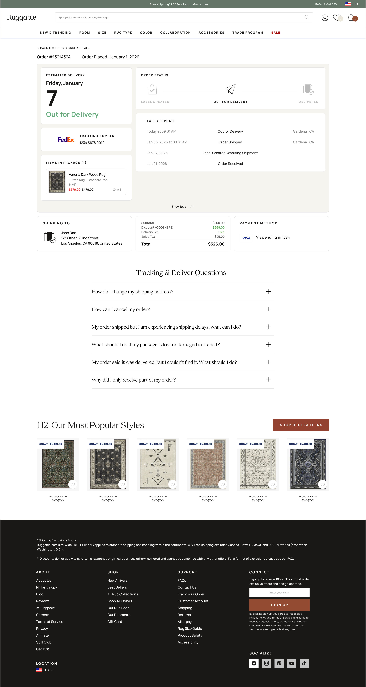
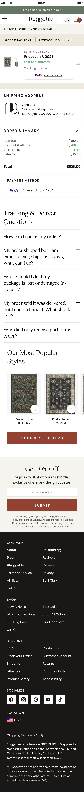
28%↓WISMO ticket volume (post-launch · 90d)
100%↓Post-ship "where is it" email inquiries
3.2×Self-service resolution rate
+11ptsPost-purchase NPS vs. baseline
01 · The problem
The data was there. Just not where customers expected it.
Ruggable had two post-purchase pages: an Order Details page (where customers landed)
and an Order Status page that lived behind a "Track Item" link inside Order Details.
The status data customers actually wanted (shipping state, tracking, delivery estimate) was on the
status page, one click further than most people went.
WISMO ("where is my order?") was 10% of inbound CX tickets, the largest single
category by volume. CX brought the issue to UX with a clear ask: consolidate the two pages into one,
redesign around what customers actually need on the page, and deprecate the Order Status page.
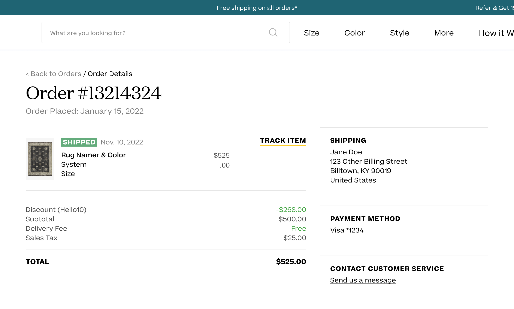
01Order Detailswhere customers landed
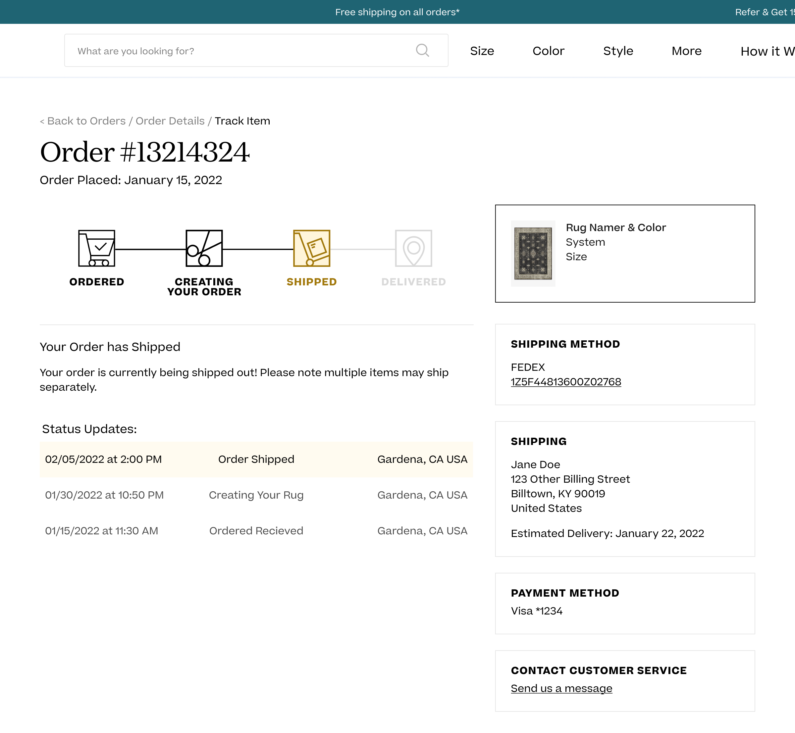
02Order Statusone click further
The two-page split that caused the WISMO load. Customers had to click "Track Item" inside Order Details to reach the actual status. Most didn't.
From the brief
"Key details on status are on the Order Status page, which requires an additional click to get to.
We think many customers are missing this, expecting instead that the status/key details should be on
our Order Details page. To offset CX tickets, we want to consolidate & redesign our Order Tracker
(deprecating the standalone status page)."
02 · Brief & process
How a project moves at Ruggable.
Tickets at Ruggable start with a PM, who scopes the problem and writes the brief. UX takes it from there.
Research, references, ideation, then rough directions back for review. We loop with PM and the rest of
UX first, then bring CX in. Engineering builds in continuous feedback rounds with us so what ships looks
and reads right.
For this one, CX had pulled both the volume picture and the qualitative. My job wasn't to gather raw
research. It was to turn the brief into design directions.
Reference work first
Before opening an artboard, I built a reference board in Figma. Post-purchase tracking patterns from
peer DTC brands, carrier-side experiences, app and email order updates, and the existing Ruggable pages
annotated with what was working and what wasn't. The reference board became the team's vocabulary, so
when we discussed concepts later, we could point at it.
Reference board · post-purchase tracking patterns gathered from peer brands, apps, emails, and carrier sites. Built first, designed second.
Insight from the references
The trackers that worked best treated each piece of order info as a modular unit (status, ETA,
tracking, line items, address), not a fixed page layout. That framing pointed straight at a
card-based system: composable, state-aware, easier to evolve.
03 · Concepts
The configuration space, not the directions.
The reference board pointed at a card system early, so the interesting question wasn't
which approach. It was which configuration: what goes where, in what order, at what
hierarchy. I worked through that exploration on both surfaces, with the same cards composed
differently each time.
Mobile · top-area variants
On mobile, the variation lived almost entirely in the top section. The answer to "where's my
rug?" had to come first, but how to compose ETA, status, and the product itself was open.
Below the fold the content was identical across variants.
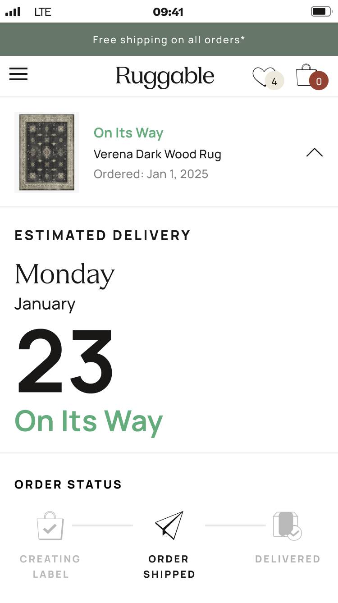
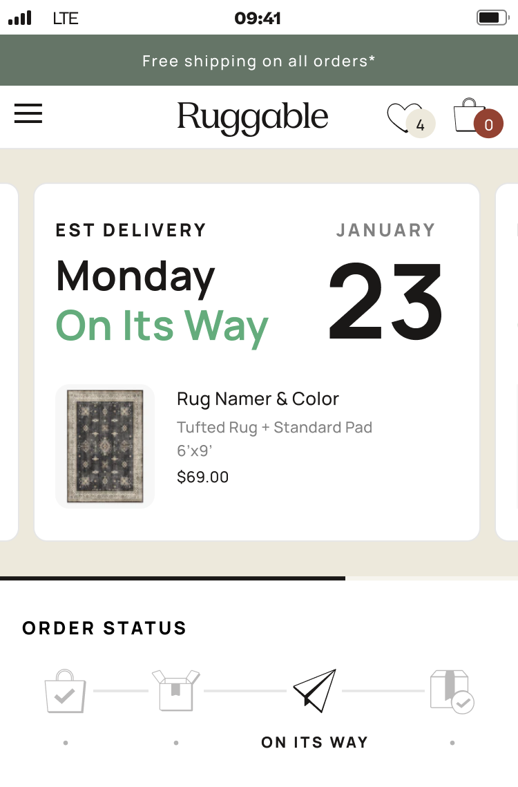
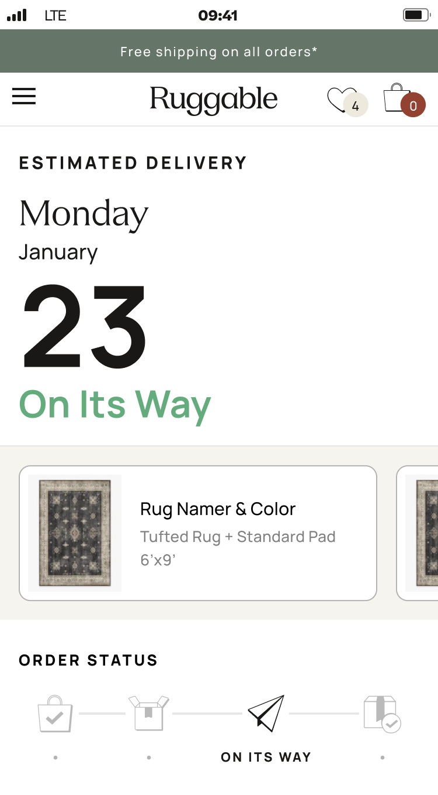
Three mobile top-area variants. Same content, three ways to weight ETA, status, and product against each other.
Desktop · full-page variants
Desktop opened up at the page level. The variation moved to multi-item orders, where to slot
promotional touts, and how to surface the latest update without burying the timeline. Each
variant tested a different balance.
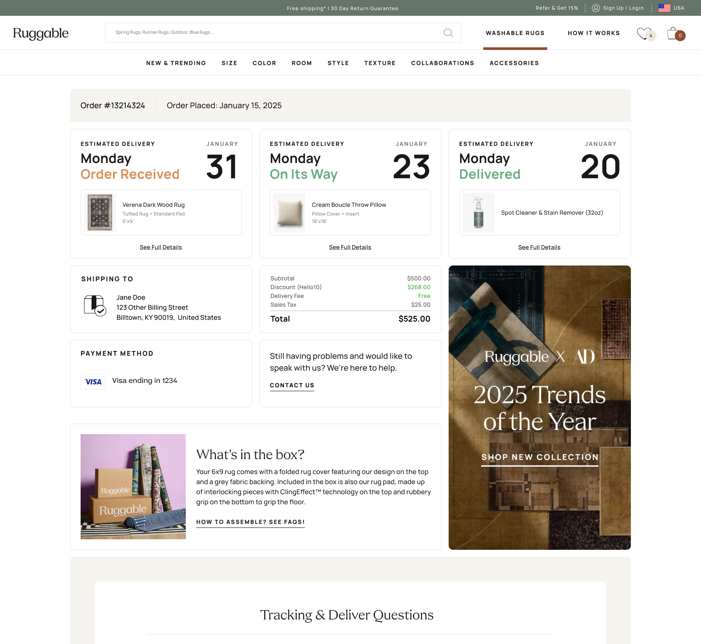
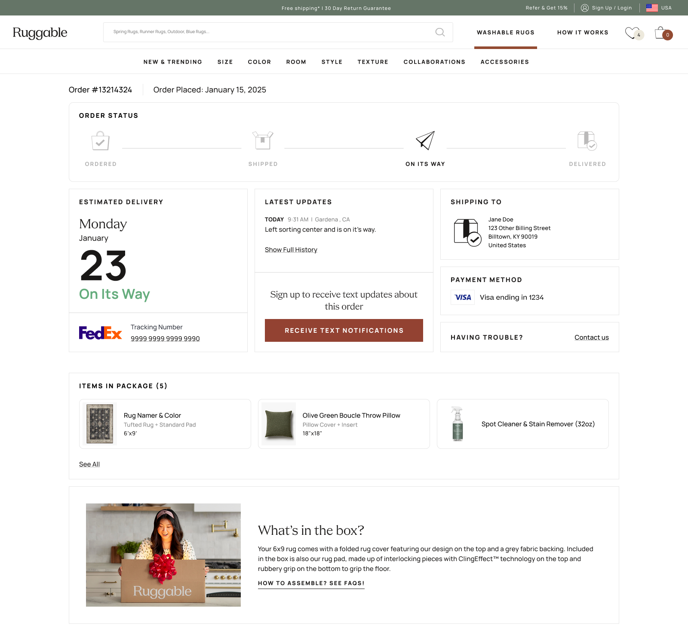
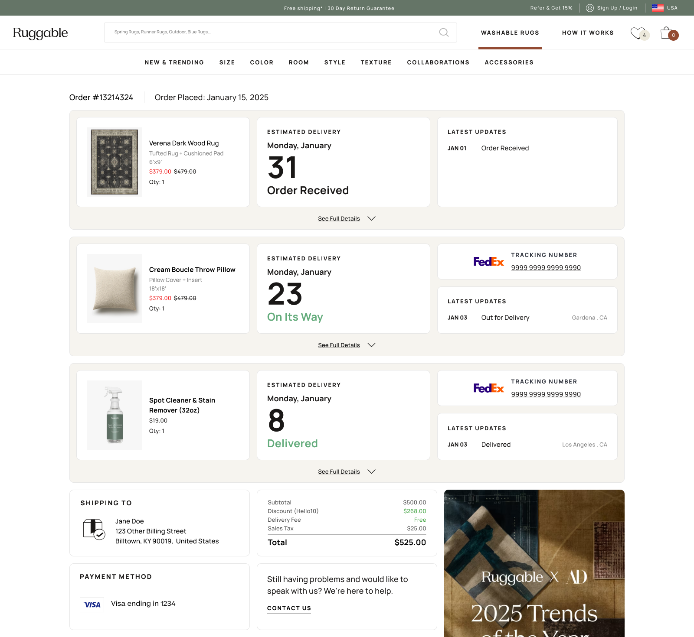
Three desktop variants. The third (multi-item) became the direction. The information flow inside it kept evolving from there.
The resolved direction
We landed on the expand-and-collapse pattern. Each item card minimizes to a compact row by
default and expands for the full tracking detail. It handled the multi-item case cleanly,
kept simple single-item orders from feeling sparse, and gave touts and updates a stable
home that didn't shift between states.
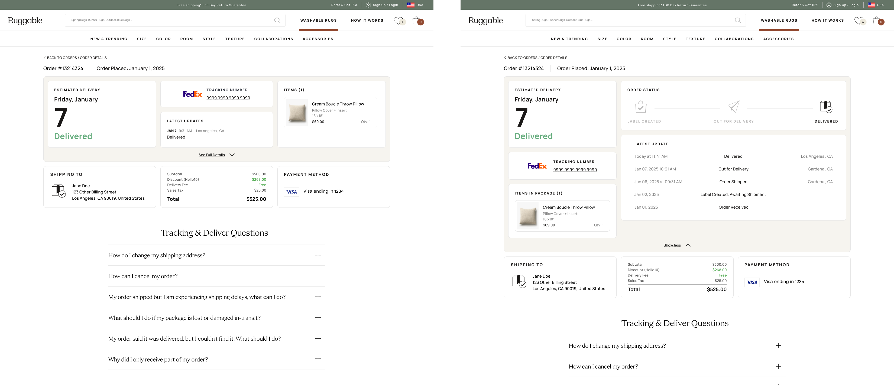
Same page, two states. The expand-and-collapse mechanic is what made the system handle every order shape with the same vocabulary.04 · Building the cards
Listed every card before building one.
Before drawing any UI, I listed every card the system would need: order status, ETA, tracking number,
line items, payment summary, customer service link, delivery address, exception messages, line-item
drilldown, shoppable upsell. The list kept me organized as I worked. I could see what each
configuration was missing, drop in new cards when ideas came up, and decide which earned a spot in the
final set. MVP scoping became a content decision rather than a layout one.
I designed each card individually (default, empty, edge cases), then assembled layouts from them.
Each state got its own configuration: order received, label created, shipped, out for delivery,
delivered, delayed, returned, plus the logged-in / logged-out variants and a handful of error states.
Some cards earned a permanent slot. Others got pulled into MVP-deferred (line-item drilldown,
shoppable elements, how-to LP links) so we could ship the most important cards first and add the rest
later without redesigning the page.
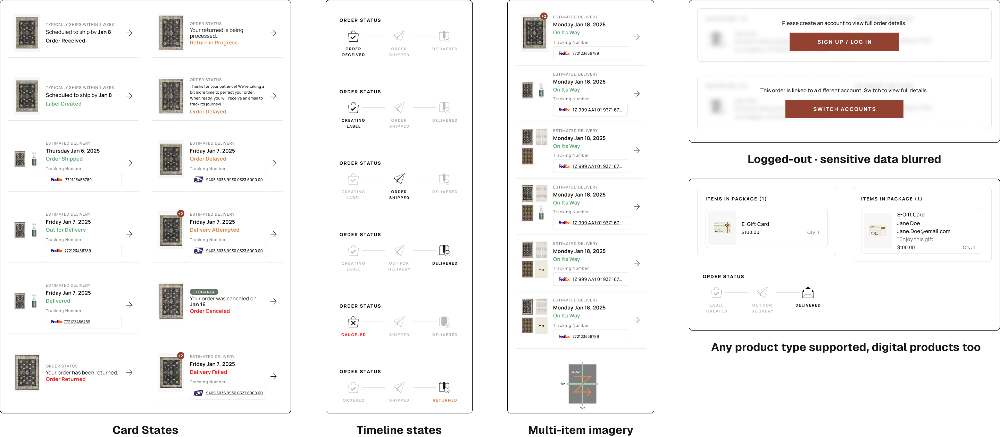
Card library. Every card type grouped by purpose, with MVP-shipped and deferred variants both visible so scoping was a content conversation rather than a layout fight.
Team review & CX feedback
Two or three solid configurations went to the team, PM and my UX lead first, then CX. CX feedback
was mostly content-level: phrasing, hierarchy, copy that read like a person rather than a system.
Because CX had been in the loop as observers from the early rounds, the formal review was a tightening
pass rather than a reset.
Cross-team note
One non-design challenge: the new states needed a unified source of truth for order data, which
engineering had to wire up across internal systems. They led that integration; my job was to design
the surface that would consume it cleanly.
05 · The solution
One order can be many shipments.
A Ruggable order isn't always one box. Items get grouped onto shipping labels and
bundled into the parcels they actually travel in, so a customer who ordered several
rugs can end up with three or four shipments, each one moving on its own schedule.
The redesigned tracker stacks each shipment as its own card: a plain-language status
up top, expandable to the full timeline and the items inside it when the customer
wants the detail.
We designed for the worst case on purpose. The old tracker assumed the simple order,
one box, one timeline, and fell apart the moment a customer ordered a lot. Building
the stacked, expandable pattern around the messy order first meant the simple order
was just the one-card version of the same system, not a separate design.
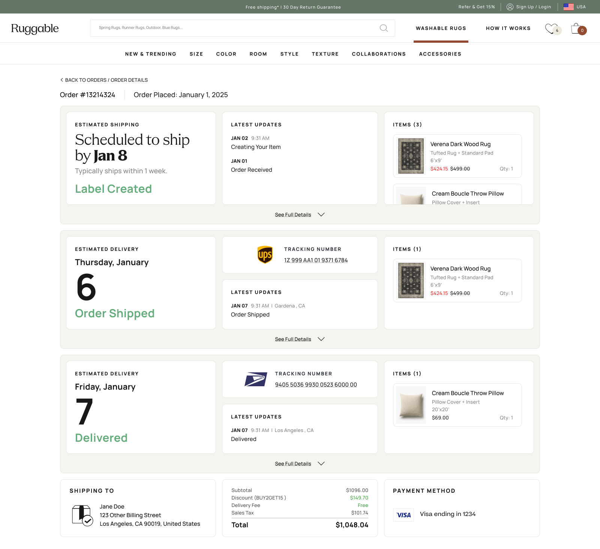
One order, three shipments. Each label stacks as its own card with its own status, expandable to the full timeline and the items inside.
Language that calms the wait
The biggest copy work happened in the in-between states, the days after a customer submits
their order but before the package physically ships. That gap is where anxiety builds: "is my order
actually being made? did anyone see it? when does this turn into a tracking number?" The old page just
said "Order Received" and went quiet.
The new copy answers the unasked question. Each state surfaces an expectation the customer would
otherwise email about, things like "typically ships within 1 week" or
"scheduled to ship by Jan 8", paired with the status itself. Same data the system
always had; we just decided to say it out loud instead of leaving it implied.
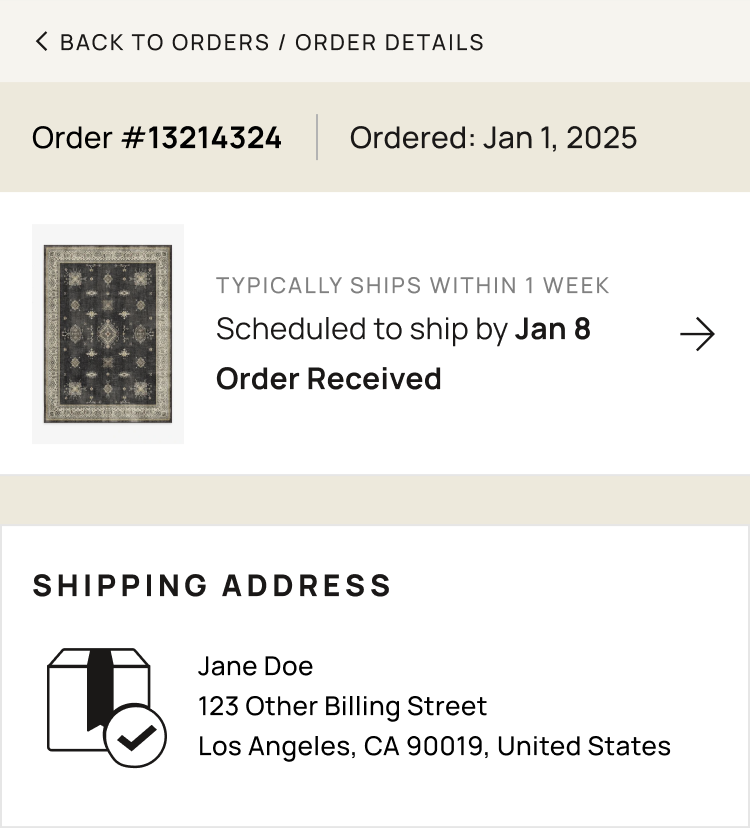
Pre-ship "Order Received" state · the language layer that did most of the WISMO work. Customer knows what to expect before they think to ask.06 · Mobile
A true mobile experience, not a port.
Per the data team's analytics, a significant share of order-tracker traffic was mobile. I didn't design
mobile first, but I treated it as a real surface. Single-column, generous tap targets, one primary
action per state, and content prioritized for the smaller view. Mobile got the same care as desktop, not
a shrunk-down version of it.
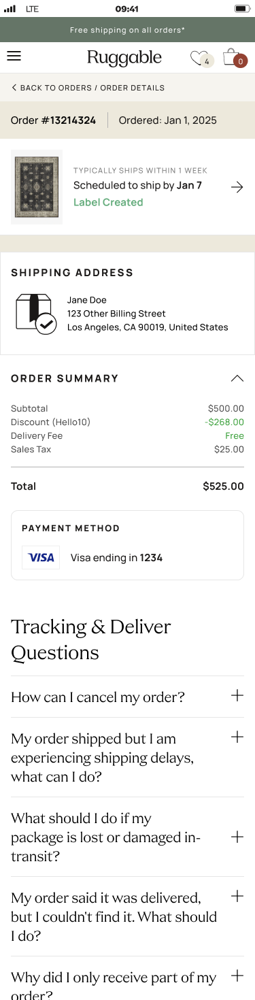
01Order received
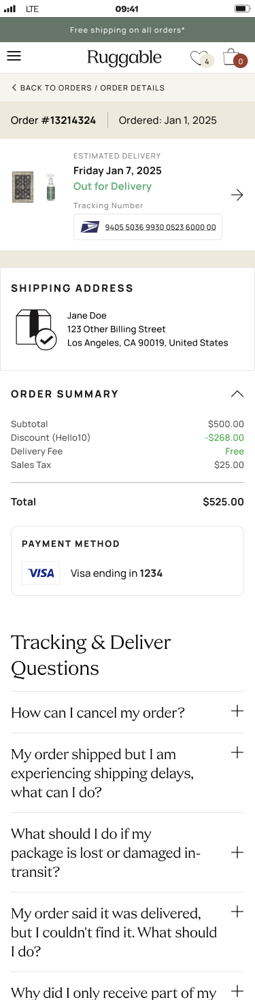
02Out for delivery
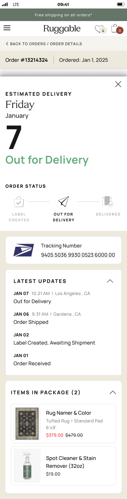
03Drawer expanded
Three mobile states. The compact view (1, 2) shows status and the answer to "where is my order?" first; tapping the order item raises a drawer (3) with the supporting detail that lives in the desktop sidebar.
Mobile pattern
On desktop, supporting detail (tracking number, address, line items) sits in a sidebar next to the
timeline. On mobile, that content lives in a drawer that slides up when the customer taps the order
item. Same information, surfaced only when needed. The default screen stays focused on the answer
to the question that brought them here.
07 · Outcomes
The ticket pile shrunk.
After ship, our PM tracked WISMO ticket volume and ticket types against the old experience.
Within 90 days, the result was clear.
Headline result
28%↓
Drop in WISMO ticket volume against the old experience.
90 days post-launch
Self-service resolution
3.2×
Post-ship "where is it" emails
100%↓
Post-purchase NPS
+11 pts
Post-ship "where is my package" inquiries were effectively eliminated; the remaining ones are edge
cases the page deliberately escalates. CX redirected the saved hours into proactive damage-claim
outreach.
08 · Reflection
What I'd do differently.
What worked
Listing the cards before composing.
Building the card library as a complete set first (including ones we knew wouldn't ship in MVP) made composition fast and made scoping a content conversation rather than a layout fight. Adding a deferred card later doesn't redesign the page; it slots in.
What I'd change
Push for more than MVP.
I'd advocate harder for the deferred cards in the first ship. In my experience, "we'll ship that next sprint" often becomes "we'll get to that eventually." Priorities shift, new tickets land, and the deferred work quietly goes dormant. Holding the line on a slightly bigger v1 sometimes saves you from never shipping v2.
Open question
How much should the page be proactive?
We held back optional "we're watching it" notifications on stale states. The tradeoff is notification fatigue vs. reassurance. Worth A/B testing whoever picks this up next.
What's next
The card system has reach.
Returns and damage claims have the same problem: lots of data, no story. The same card pattern, with different content, is the obvious next application. It doesn't have to be redesigned, just composed differently.
Next case study
Ruggable · 2024 · AI
Designable. Started as a chatbot.
Ruggable's AI rug recommender. Started as a chatbot, then a form. Shipped as a single
photo upload that returns curated picks in seconds.